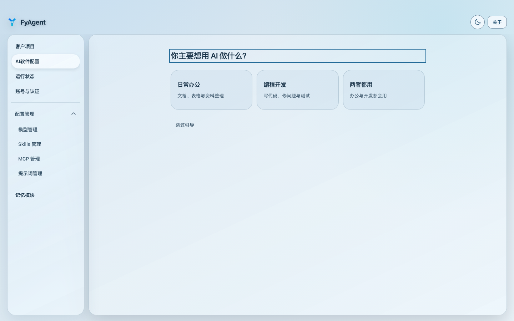
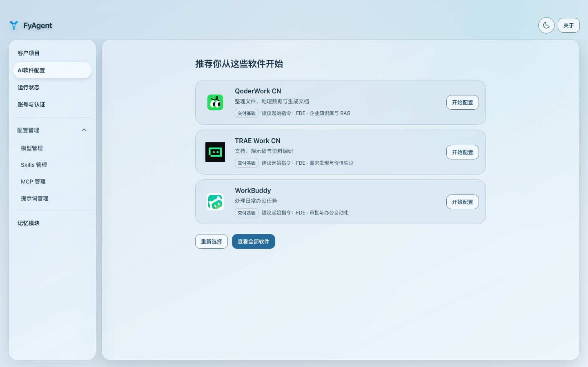
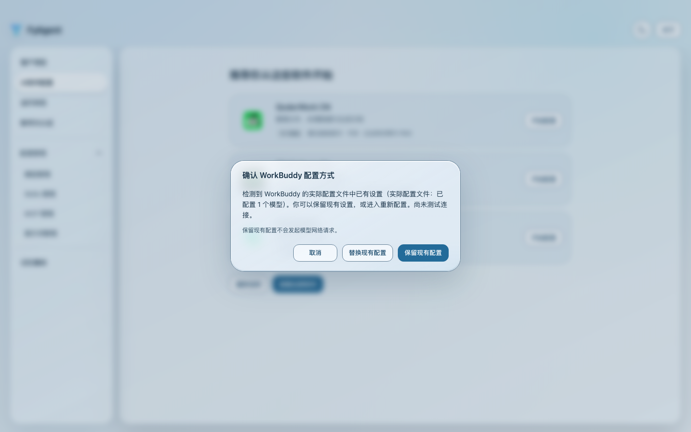
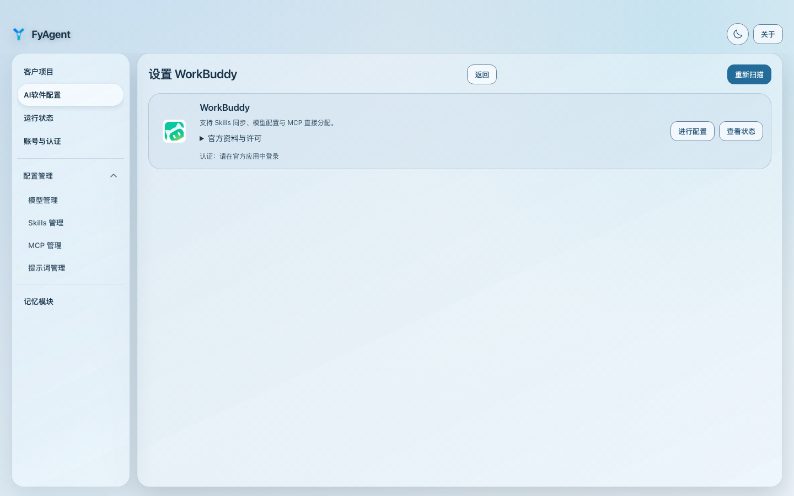
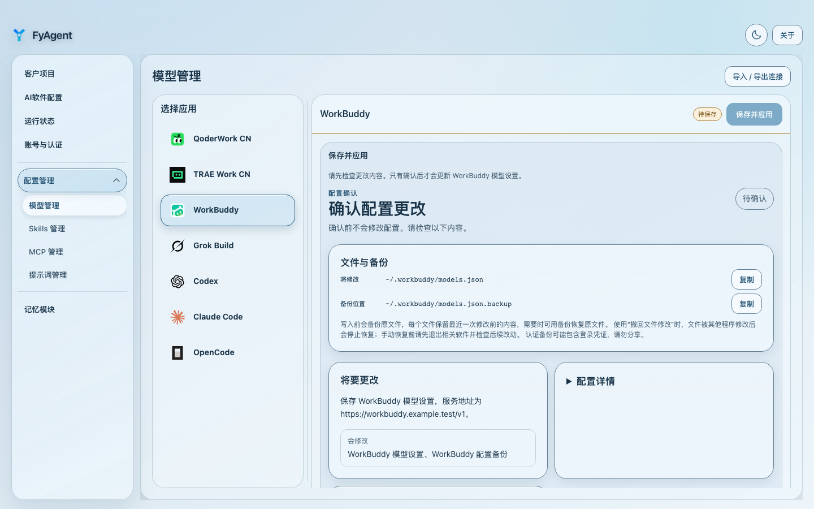
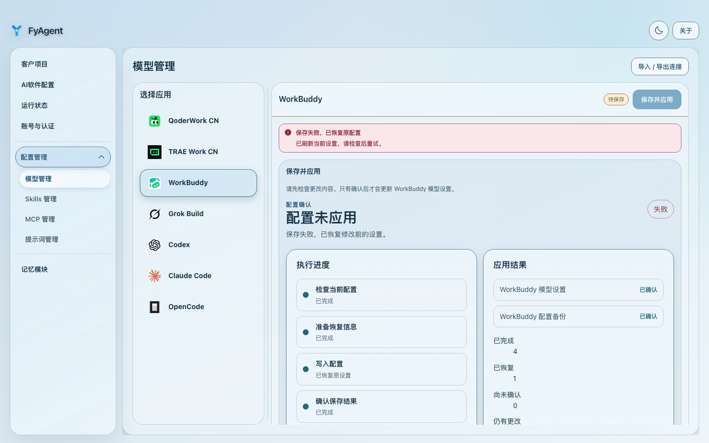
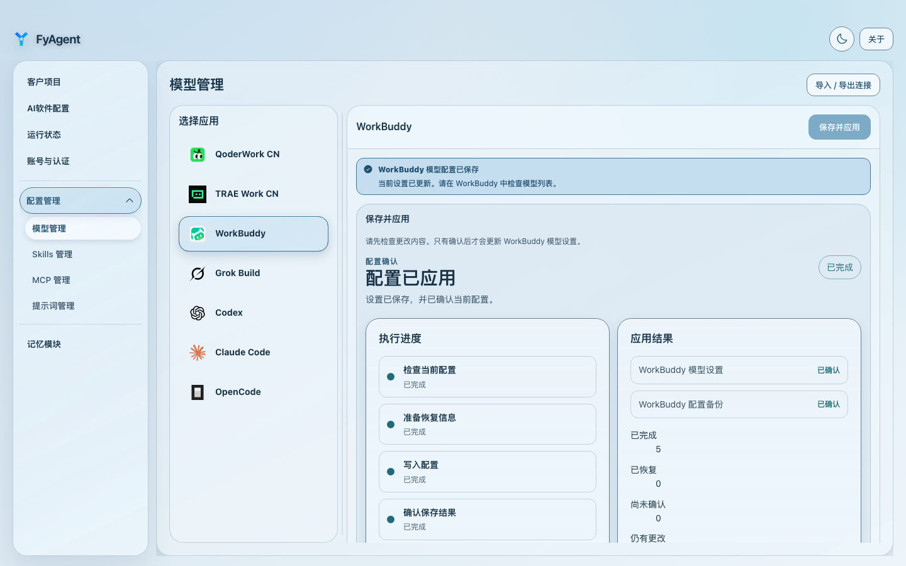

FyAgent 使用演示
版本 0.4.6 · 候选采集 · 隔离的浏览器演示数据，仅说明当前界面，不代表真实账号、原生回滚或安装验收。

先选择主要用途；也可以跳过引导，直接查看全部软件。
办公用途推荐会说明适合的软件，之后可进入软件配置入口。
已有配置时，可以保留或进入替换流程；这一步尚未修改配置。
在选中软件的卡片确认安装状态，再进入模型配置。
填写服务地址和模型后，检查将修改的文件，再确认应用。
演示数据返回失败并已恢复状态；这不是原生文件回滚的实测证明。
另一组独立演示数据返回保存成功，凭据输入已清空；不代表真实账号已配置。素材、源码版本和校验值